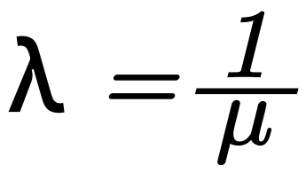
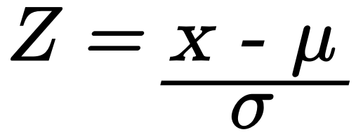

Distribución Exponencial
Modela el tiempo entre eventos raros con tasa constante λ. Relación con Poisson: si el conteo de eventos en un intervalo es Poisson(λt), entonces el tiempo entre eventos es Exponencial(λ).



- μ (media): tiempo promedio entre eventos. (por ejemplo: el tiempo de espera promedio es 10 minutos μ = 10).
- λ (lambda): tasa por unidad de tiempo, para obtenerla es necesario tener el valor de μ. (por ejemplo: μ = 10, λ = 1/10 = 0.1).
- x (límite inferior): tiempo para evaluar la probabilidad. (por ejemplo: por ejemplo 5 minutos ).
- xb (límite superior): segundo tiempo usado únicamente para calcular "entre dos tiempos". (por ejemplo: entre 10 y 40 minutos x = 10 b = 40).
Curva de densidad exponencial
Distribución Normal (Campana de Gauss)
Modelo que describe el comportamiento de muchos valores, tiene forma de Campana simétrica y la mayoria de datos se concentran alrededor de un valor central: Media(λ). Para obtenerla debemos calcular el valor de Z y luego hacer uso de la tabla de valor A-Z

- μ (media): promedio de los valores, indica donde se centra la campana. (por ejemplo: el tiempo promedio de llegada es 20 minutos μ = 20).
- σ (varianza): qué tan dispersos están los datos alrededor de la media.
- x (límite inferior): valor de probabilidad que queremos evaluar. (por ejemplo: probabilidad de que x sea menor que 18 x = 18).
- Z: valor estandarizado que se usa para convertir cualquier normal a normal estandar con la tabla de valores A-Z. (por ejemplo: Z = 1.25 Z = 89%).